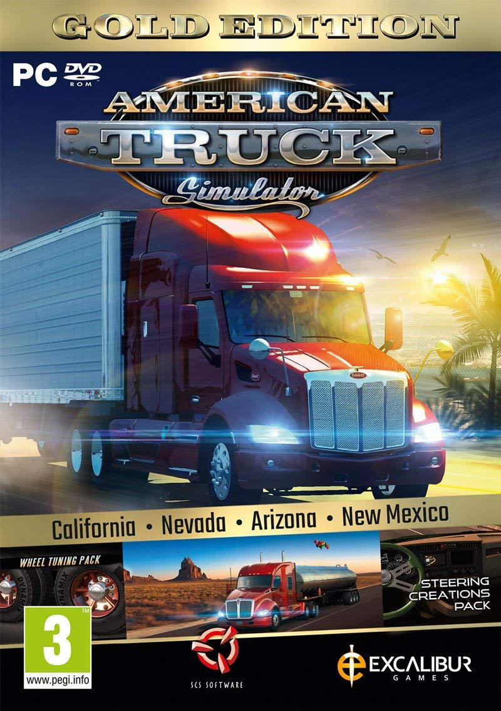
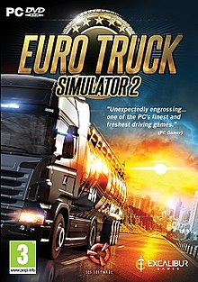

Zajimavosti:
 V roce 2015 vydán nástroj SCS Blender Tools, vytvořený na základě editoru Blender.
V roce 2015 vydán nástroj SCS Blender Tools, vytvořený na základě editoru Blender.
Využívpa se taky k přímému prohlížení a interakce s laserovými obrazy a laserovými modely.(Quantpoin.inc)
Je vyvíjen interně -> volný vývoj her bez omezení ostatních enginů, je dělaný na míru všem hrám scs software
Vlastnosti:
Je multiplatformní
Je 32 i 64bitový
Využívá základy z Blenderu pro tvorbu modelů
Dobrá práce s otevřeným světem
Kód je v enginu konzistetní, dobře zdokumentovaný a objektové orientovaný
 
Top Hry:
Euro Truck Simulator 2
American Truck Simulator
Ttuck & Trailers
Hunting unlimited